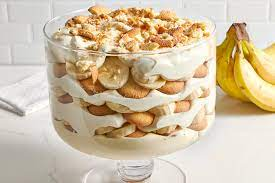

Banana Pudding

Description
If it's for the holidays,
or just to cure that sweet tooth,
here is our never fail banana pudding recipe:
Ingredients
1 (5 ounce) package instant vanilla pudding
2 cups cold milk
1 (14 ounce) can sweetened condensed milk
1 tablespoon vanilla extract
1 (12 ounce) container frozen whipped topping,thawed
1 (16 ounce) package vanilla wafers
14 bananas,sliced
Steps:
- In a large mixing bowl,beat pudding mix and milk for 2 minutes.
- Blend in condensed milk until smooth.
- Stir in vanilla and fold in whipped topping
- Layer wafers,bananas and pudding mixture in a glass serving bowl.
- chill until serving.